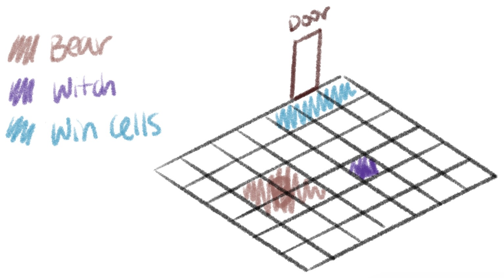
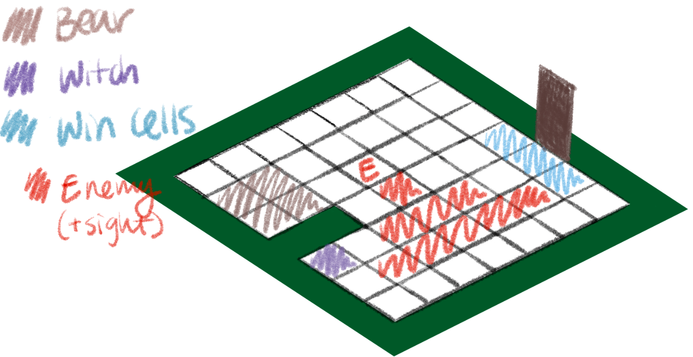
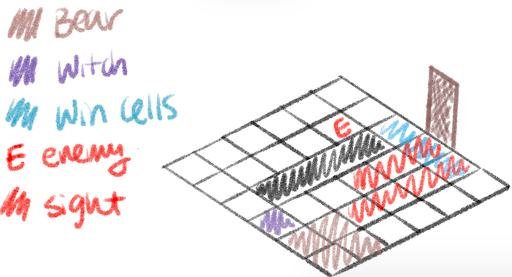
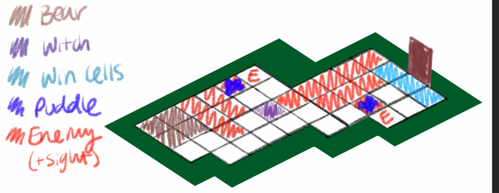
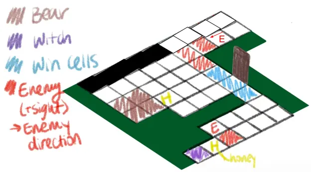
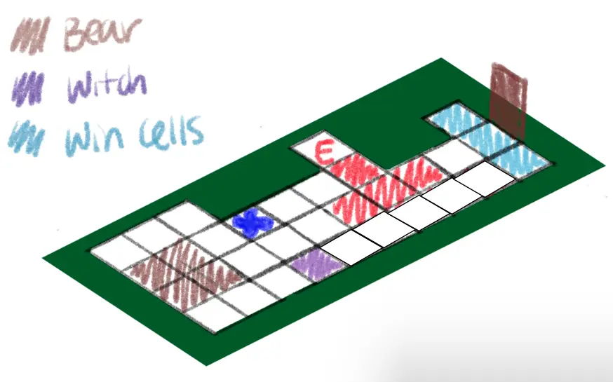
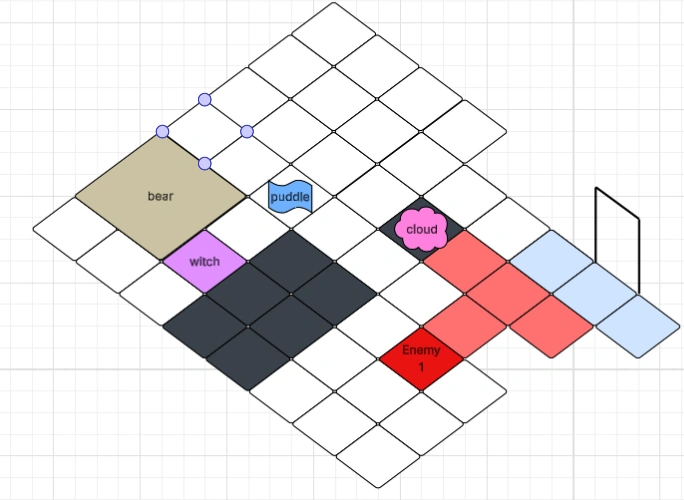
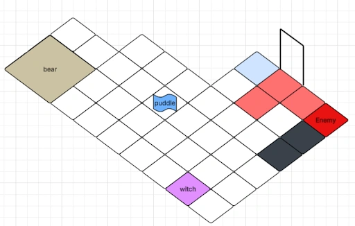

Turn-based stealth puzzle prototype
Voted "Most Visually Appealing" Play as two characters, a Witch and her Bear familiar, to navigate environments while avoiding enemies. Use the Witch's spells to manipulate the environment and the Bear's strength to incapacitate enemies and push obstacles. Work together to reach the exit!
Level Designer
Gameplay Developer
Overview
Ursa Magus was built in Unity 6 over a period of four weeks. Our team was given the task of designing an RPG game with two controllable characters that have their own interactions and items, but work together. Each level functions as a self-contained puzzle, introducing mechanics incrementally. Abilities and items each have a dedicated tutorial level to introduce players to the different mechanics.
Level Design
The first level was designed to teach players simple movement and the win condition. Player characters start in the middle of the room, allowing them to travel in all 4 directions. The rest of the room is empty to show the win condition: both the bear and witch must stand on the door win cells at the same time. The simple level also helps players get used to the turn-based, tile-based structure.


The second level introduced players to enemies and enemy sightlines. When enemies are hovered over, their sightline highlights cells red. All elements are placed around the level such that the witch and bear have a relatively equal number of turns to get to the door.

The third level introduced the witch's Cloud ability and the bear's Bear Hug ability. The witch is able to pass through the narrow gap and get to the door, but the bear must also get to the door to finish the level. Since the enemy's sightline overlaps with the door win cells, players should realize that they have to attack the enemy. The witch will need to create a cloud path for the bear to get through and Bear Hug the enemy. Then, ideally players will try to place a second cloud for the bear to get to the door. This will reveal that there can only be one cloud on the map at a time, and placing the second disappears the first.

The fifth level introduced the Ice Block ability. The bear is stuck until the witch uses her ice block spell on the puddle in front of the first enemy. The path to the door is blocked by the second enemy. To prevent players from using the Bear Hug ability, the path is narrow. This allows for only the witch to pass through and place her Ice Block ability, blocking the enemy.

The seventh level introduces the Honey item. With the enemy standing right in front of her, the witch cannot pass. However, the Honey allows for her to make two movements in one turn. This also teaches players that the enemy only checks their sightline before and after their turn. Similarly, the bear must avoid a tree that is patrolling towards her. Without the Honey, she will inevitably get caught in its sightline. She must use the Honey to move out of its patrol in time, or get close enough to use her Bear Hug ability.

The eighth level teaches players the Ice Push interaction. To make the characters work more together, we wanted to create an interaction that involves both of their abilities. The bear cannot pass the enemy, and the level is designed such that she cannot Bear Hug the enemy either. The witch must create an ice block from the puddle, and the bear can push it forward, blocking the enemy's sightline.

The ninth level combines earlier abilities: the Cloud and Ice Block. The witch creates the Ice Block from the puddle, which the bear pushes to block the enemy's view. The witch then places a cloud to get the bear to the door win cells.

The tenth level also uses the Ice Block ability, but encourages players to be creative and block the ice's path with their body. Players should have been familiar enough with the spell to recognize that the ability continued until an object was in its path. The witch makes an Ice Block from the puddle. If the bear pushes the ice block towards the end, it will get stuck in the corner. The player may have the witch stand in its way, allowing for the bear to then push it upwards and block the enemy's sightline.
Iteration
In week 1, we set up the basic grid system, with players controlling the Witch and Bear in a simple level with one enemy. After the first playtest, we received valuable feedback that players had a lot of confusion around the tile movement, phase structure, and enemy sightlines. We identified that tutorials would be a necessary next step to onboard players. We also asked players for their insights on future character ability design, and found that they aligned with the team's plans. This indicated to us that the theming and styling of the game matched player expectations.
In week 2, playtesters were more familiar with the turn-based game structure and were able to give more feedback on the level design. Levels were often too open, allowing players to reach the exit without using the intended ability or item. Some levels were too reliant on either the Witch or Bear, going against the cooperative puzzle-solving aspect of the game. Lastly, players were introduced to the "Bear Hug" ability first, which incapacitates enemies. Because of this, players believed that all enemies had to be defeated to beat the levels, discouraging them from using other abilities or items. I redesigned levels based on this feedback. As a team, we decided on the order in which we wanted to introduce abilities and spells. I then reworked the levels so that players were forced to use a given ability or item to beat a level. This often meant blocking the enemy from the Bear's reach, or trapping the player with the enemy.
In week 3, we implemented our cloud ability, which allows players to clear gaps in the level, and our tutorial system. Playtesters responded very positively to the new onboarding through tutorials and clearer level design. Players began using their spells and items to beat the levels in clever ways, as opposed to defaulting to any single one.
In our final sprint, we focused on bugs and implementing updated assets. I handled inconsistencies with the Bear's abilities, tilemap colors, and layer ordering.